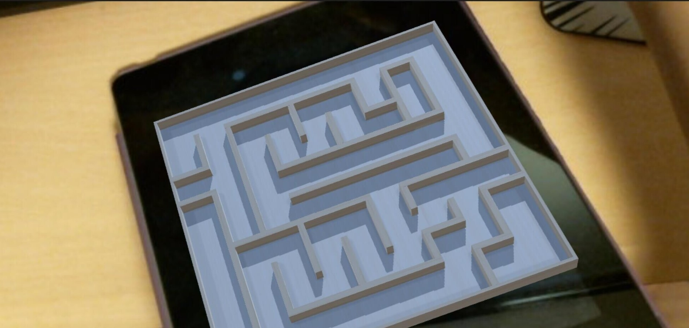

Labyrinth is a game consisting of a box with a maze on top with holes. The players need to guide the steel marble on the board by knobs on each side to tilt the playfield and get the marble to the goal of the labyrinth. Such a pretty straightforward idea can be obtained by observing the following image.

As I went through the process of building a simple maze game last time, this time I will jot down the notes of turning it into an AR-compatible game, in which the user will tilt a cardboard (ideally) or a piece of paper with a marker on it. The result will be like this ↓:

Design a level (map). To ensure the job can be done swiftly, it is always nice to have something in mind beforehand. Most good games have really well designed levels with proper challenges to make the game attractive. However, since it is not the main goal at this phase, I suggest just search online to find millions of good maze designs and grab a favorite one and then throw it into the Unity editor. For instance, I used this one in this example.
Build the maze according to the map. It is not so hard and the steps were elaborated in the last note. Just use cubes and planes to get the job done. In addition, it is also necessary to drop a steel marble at the entrance. In fact, materials and rendering are not very important in this example, so casually find some wood textures, make a material with diffuse shader, and drag-n-drop it on each part of the maze, and also do the same thing to the marble. An alternative way is to utilize the Asset Store built in the Unity editor, quite a lot textures and materials are free to download and easy to import. My result is shown here.
Before rushing forward, it is necessary to go to https://developer.vuforia.com/ to register an account, get a free development key under license manager tab and then head back to Unity editor’s ARCamera object’s inspector panel, press Open Vuforia configuration button and paste the license key to App License Key.
Then, open the browser again and switch to “Target Manager” tab, “Add Database” with a memorable name and “Device” type. “Add Target” of image type and upload the maze map image we just used in the first step as the marker (just for convenience). When it’s done, press the “Download Database” button and get a .unitypackage file. Return to Unity editor and import the downloaded database. After the import is completed, go to the inspector panel of ImageTarget to select our image target. When it is done, the maze image should appear in the scene. Drag all game objects that belong to the maze and the marble to ImageTarget to make them become children of ImageTarget. This step is important to make apps AR-campatible.
Connect a webcam or use built-in cam on the computer and press “play” to see if the marker is working properly. The maze should appear when the camera detects the marker, if not, double check if the database is activated and try moving the camera around.
An AR labyrinth game is made merely with in-built physics engine of Unity without any coding.